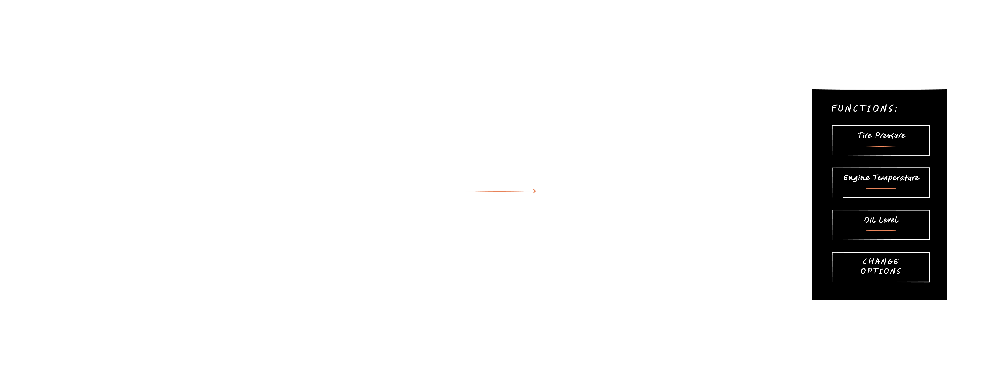

×

I worked as UX Designer on BMW Motorrad's next-generation TFT instrument cluster HMI - an adaptive interface for urban, sport, and adventure motorcycles launching in 2027.
Over 18 months, as part of a multi-disciplinary team, I worked on the parts of the system the rider feels most - how information is structured, how the interface adapts, and how critical data stays within reach without breaking focus.
Note: Some details have been abstracted due to NDA constraints.
Designing for motorcycles means designing for motion. Every interaction happens at speed, through a helmet visor, with the hands on the handlebars. Distraction isn't an inconvenience, it's a safety risk.
The challenge was not just designing an interface, but ensuring critical information could be understood instantly in high-risk, high-speed contexts.
Critical info in one tap - every second of attention counts.
Navigation via handlebar buttons - Simplified navigation paths and clear shortcuts.
Scratched or tinted visors demand high contrast and icon-first design (when possible).
Tire pressure can fail mid-ride - graceful states, fallbacks, never empty screens.
My role centred on the structural foundation — the architecture, behaviour rules, and safety logic that keep interactions predictable, even under pressure.
01
Navigation paths, popup behaviours, overlays, and shortcuts - single source of truth for designers and developers.
02
Every state for heating and ride height: available/unavailable, active/inactive, levels, errors.
03
Which alerts override others when multiple appear. Safety warnings always first - rules for blocking, queuing, and simultaneous display.
04
Riders choose their critical data - tire pressure, engine temperature, fuel. One button. No menus.
As features were being defined across the team, I created and maintained the system structure flowchart - a living document mapping the complete interface architecture, used by designers for transitions and developers for implementation.
Navigation structure - Every screen, every path, from main menu to deepest levels.
Popup & overlay behaviour - Where they open, how they dismiss, and what happens when a button is pressed while a popup is visible.
Shortcuts - Direct access paths bypassing standard navigation, with clear rules for activation.
We structured the system around quick access over depth, prioritising immediate comprehension instead of exhaustive navigation.

I defined which alerts take precedence and how they behave when appearing simultaneously. We prioritised critical alerts at all times to ensure rider safety, even at the cost of temporarily hiding secondary system feedback.
Critical (engine failure) - Interrupts everything, including open dialogues. Requires manual dismissal.
Warning (tyre pressure, ABS) - Same behaviour as critical, but queues behind any active critical message.
Feedback (setting confirmed) - Layers alongside other popups. Suppressed when critical alerts are active.
I led the UX for a customisation system letting riders choose what vehicle data matters most to them - tire pressure, engine temperature, fuel level - accessible with one button press, no menus. We reduced interaction steps to a single tap to minimise cognitive load in high-speed scenarios, even if it limited access to secondary information.
The system adapts to each bike model, showing only data for installed sensors. During usability testing with ~15 riders in a simulator, it was praised for being intuitive and immediately understandable.

I built the prototypes used for usability testing with ~15 riders in a motorcycle simulator. The sessions focused on three areas: navigation intuitiveness, glanceability under realistic riding conditions, and system consistency across all interface states.
Results validated the core interaction model - particularly the customisation system, which riders found immediately understandable. Feedback from testing fed directly into the final iteration of the priority matrix and shortcut logic.
This work established the structural foundation for BMW Motorrad's instrument cluster - system architecture, behaviour rules, and safety logic that will scale across motorcycles launching in 2027.
01
The flowchart became the single source of truth. In safety-critical interfaces, inconsistency isn't just bad UX, it's a safety issue.
02
Maintaining flowcharts and matrices throughout the process forced clearer thinking about edge cases and caught conflicts when they were still easy to fix.
03
Fixed hardware, unpredictable sensors, and safety standards taught me to think ahead. Every state needs a fallback. Every error needs clear communication.
Back to Work
Case Studies →